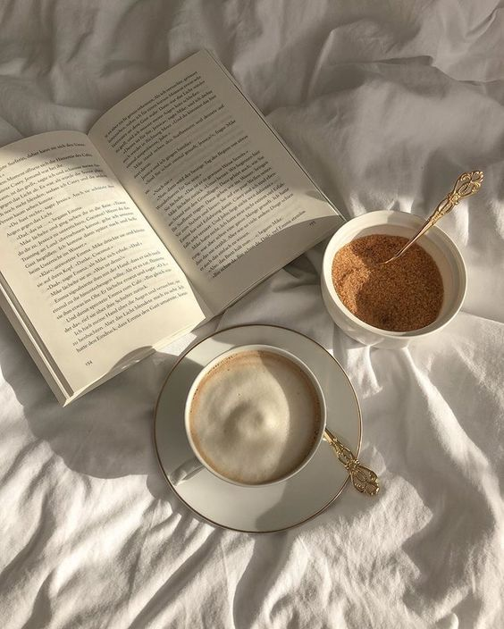

<div class="full-page">
  <div class="about-container">
    <div class="content-box">
      <div class="blog-content">
        <h2 class="aboutme-header">About Me</h2>
        <div class="image-and-text">
          <div class="text-wrap">
            <p class="wrapped-text">
              <strong>Hello,</strong> and welcome to my little corner of the
              internet! I'm Angelica, the passionate bookworm behind this blog.
              I'm thrilled to have you here, and I can't wait to share my love
              for books with you.
            </p>
          </div>
          
        </div>

        <p>
          Ever since I can remember, I've been captivated by the magic of the
          written word. Books have been my faithful companions, transporting me
          to distant lands, introducing me to fascinating characters, and
          sparking my imagination. This blog is my way of sharing that
          enchantment with you.
        </p>
        <br />
        <p>
          As a lifelong reader, I've delved into a wide range of genres and
          authors. From classic literature to contemporary fiction, non-fiction
          that expands the mind to thrilling mysteries that keep me up all
          night, I've explored it all. On this blog, you'll find a treasure
          trove of book reviews, recommendations, and reflections on the
          literary worlds I've encountered.
        </p>
        <br />
        <p>
          But this blog is more than just book reviews. It's a place where we
          can connect over our shared passion for reading. I believe that books
          have the power to inspire, challenge, and change us, and I look
          forward to discussing these transformative experiences with you.
        </p>
        <br />
        <p>
          When I'm not lost in the pages of a great book, I can be found sipping
          on a warm cup of tea, exploring new bookstores, and jotting down ideas
          for my next read. I'm also a firm believer in the importance of
          diversity in literature, and you'll often find me championing books
          that shed light on different cultures, voices, and perspectives.
        </p>
        <br />
        <p>
          Whether you're an avid reader or just looking for your next literary
          adventure, I hope this blog becomes a valuable resource for you. Feel
          free to reach out, share your thoughts, and let's embark on this
          literary journey together.
        </p>
        <br />
        <p>
          Thank you for stopping by, and I look forward to sharing the world of
          books with you. Happy reading!
        </p>
        <br />
        <p>Warmest regards, Angelica</p>
      </div>
    </div>

    <form
      [formGroup]="contactForm"
      class="content-box"
      (ngSubmit)="onSubmit()"
    >
      <div class="form-box">
        <div class="row">
          <div class="column">
            
          </div>
          <div class="column">
            <h3>Stay Connected.</h3>
            <label for="name">Enter your name</label><br />
            <input
            type="text"
            id="name"
            name="name"
            formControlName="name"
            /><br />
            <label for="email">Enter your email address</label><br />
            <input
            type="email"
            id="email"
            name="email"
            formControlName="email"
            /><br />
            <label for="message">What is your favourite book?</label><br />
            <textarea
            type="text"
            id="message"
            name="message"
            formControlName="message"
            rows="5"
            ></textarea><br />
            <button type="submit" [disabled]="!contactForm.valid">
              Connect
            </button>
          </div>
        </div>
      </div>
    </form>
  </div>
</div>
